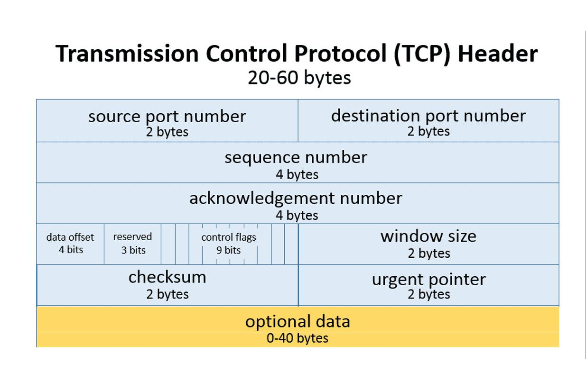
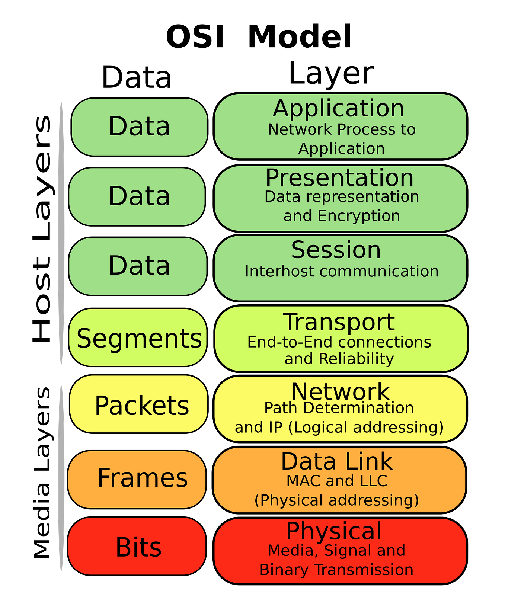

Protocols are standardized rules for communication.
In each of the communication patterns, the client / server may send messages back and forth to coordinate the transfer of the payload (the actual data being transferred).
Protocols define:
Paper Airplane Protocol
You have developed a paper airplane mode of communication, that you would like to use to serve song lyrics to your friends.
The server, a computer, is very literal. It uses an algorithm to understand the message that was sent, and responds using the same format.
Packet Number
Sender Address
Receiver Address
Action
Payload (text data to be transferred)
Data Length (character count of the payload)
Checksum (md5 hash of the payload)Diagram
Paper Airplane Protocol - DrawIO
Client
Request
1
Desk 4
Desk 11
Get Lyrics
Beatles;Yellow Submarine;Yellow Submarine
41
666180b3e449222c2241b2afe32bfca3Server
Response
1
Desk 11
Desk 4
Data Transfer
In the time that I
18
9eceaa495884413082c94280d965738e2
Desk 11
Desk 4
Data Transfer
was born, lived a man
21
690c8054749a1cb7fb448c5804613dc33
Desk 11
Desk 4
Data Transfer
in a submarine. ^ENDMESSAGE^
28
0582957562b0492f8ad2aa0807ea1154
The TCP header format specifies how the computer should interpret the information. Each field has a set length, position, and purpose.
If the standard was not followed exactly, the data would be misinterpreted.

The OSI (Open Systems Interconnection) model is a conceptual framework that splits network communication into seven layers. Each layer has one job, and relies on the layer below it.
| # | Layer | What it does | Examples |
|---|---|---|---|
| 7 | Application | Network services used by applications | HTTP, DNS, SMTP |
| 6 | Presentation | Data format, encryption, compression | TLS/SSL, JPEG, UTF-8 |
| 5 | Session | Opens, manages, and closes sessions | (usually handled by apps) |
| 4 | Transport | Reliable (or fast) delivery between programs | TCP, UDP |
| 3 | Network | Addressing and routing between networks | IP, routers |
| 2 | Data Link | Delivery between devices on the same local network | Ethernet, Wi-Fi, switches |
| 1 | Physical | Sends raw bits as signals | Cables, radio waves, hubs |
The OSI model is mainly a teaching tool. The Internet actually runs on the simpler 4-layer TCP/IP model, which combines layers 5-7 into one "Application" layer and layers 1-2 into one "Link" layer.
When data is sent, each layer wraps the data from the layer above it with its own header (and sometimes a trailer).
This makes a "sandwich" of information - the application data is at the center, and the data link frame is the outermost wrapper. The physical layer then sends the whole thing as bits.
When data is received, the process runs in reverse: each layer removes its own header and passes the rest up.
Mailing a letter:
Recall from The Internet:
UDP (User Datagram Protocol) is the main alternative to TCP. It skips the reliability checks in exchange for speed.
| Attribute | TCP | UDP |
|---|---|---|
| Connection | Handshake before sending | No handshake; just sends |
| Reliability | Lost packets are re-sent | Lost packets are gone |
| Ordering | Packets reassembled in order | No ordering guarantee |
| Speed | Slower | Faster |
| Use Cases | Web pages, email, files | Streaming, online gaming, video calls |
Why would anyone want lost packets? In a video call, a re-sent packet from two seconds ago is useless - it's better to skip it and keep going.
Recall that IP handles addressing and routing, and that we are running out of IPv4 addresses.
| Attribute | IPv4 | IPv6 |
|---|---|---|
| Address size | 32 bits | 128 bits |
| Total addresses | ~4.3 billion | ~340 undecillion (3.4 × 10³⁸) |
| Example | 192.168.1.1 |
fe80::215:5dff:fe15:fcaf |
| Status | Still most common | Growing; designed to replace IPv4 |
These layers cover how devices physically connect to a local network.
| Technology | Range | Typical Use |
|---|---|---|
| Ethernet | ~100 m per cable | Wired desktops, servers, network equipment |
| Wi-Fi | ~30-50 m indoors | Laptops, phones, home and office networks |
| Bluetooth | ~10 m | Headphones, keyboards, wearables |
Wi-Fi Frequency Bands
| Attribute | 2.4 GHz | 5 GHz |
|---|---|---|
| Bandwidth / throughput | Relatively higher (but reduced by congestion) | Relatively higher |
| Wall penetration & range | Good | Worse |
| Spectrum congestion | More congestion / interference, leading to lower throughput | Less congestion / interference due to wider range |
| Other devices in band | Competes with microwaves, baby monitors, Bluetooth, etc. | Does not compete with other devices in the same band |
See the WiFi App to explore interference between channels.